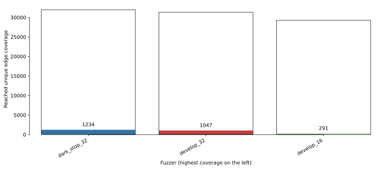

FuzzBench: brain09-jan6-stop-k-inputs report
warning
Please consider this as a preliminary report to
demonstrate the capabilities of FuzzBench. While we have
tried our best, we have not confirmed that we configured
everything correctly. We are hoping to work together
with the community to validate results and improve the
set of fuzzers, benchmarks, and their configurations in
the future.
See FAQ
for more details.
experiment summary
We show two different aggregate (cross-benchmark) rankings of fuzzers. The first is based on the average of per-benchmarks scores, where the score represents the percentage of the highest reached median coverage on a given benchmark (higher value is better). The second ranking shows the average rank of fuzzers, after we rank them on each benchmark according to their median reached covereges (lower value is better).By avg. score
| average normalized score | |
|---|---|
| fuzzer | |
| dark_stop_32 | 99.53 |
| develop_32 | 99.31 |
| develop_16 | 97.89 |
By avg. rank
| average rank | |
|---|---|
| fuzzer | |
| dark_stop_32 | 1.67 |
| develop_32 | 2.00 |
| develop_16 | 2.33 |
-
Critical difference diagramThe diagram visualizes the average rank of fuzzers (second ranking above) while showing the significance of the differences as well. What is considered a "critical difference" (CD) is based on the Friedman/Nemenyi post-hoc test. See more in the documentation.
Note: If a fuzzer does not support all benchmarks, its ranking as shown in this diagram can be lower than it should be. So please check the list of supported benchmarks for the fuzzer(s) of your interest. The list could be specified in the fuzzer's README.md like this.
-
Median code coverages on each benchmark
fuzzer dark_stop_32 develop_16 develop_32 benchmark bloaty_fuzz_target 6478.0 6570.0 6559.0 freetype2-2017 17092.0 16980.5 17073.5 sqlite3_ossfuzz 25357.5 23919.0 24905.0
bloaty_fuzz_target summary
Ranking by median reached code coverage
Reached code coverage distribution
Mean code coverage growth over time

Mean code coverage growth over time

* The error bands show the 95% confidence interval
around the mean code coverage.
error
The following fuzzers do not have enough samples:
develop_16, develop_32.
-
Sample statistics and statistical significance
Code coverage sample statistics
count mean std min 25% median 75% max fuzzer time develop_16 86400 5.0 6556.600000 102.395312 6428.0 6478.0 6570.0 6642.0 6665.0 develop_32 86400 5.0 6559.000000 21.130547 6534.0 6548.0 6559.0 6563.0 6591.0 dark_stop_32 86400 7.0 6507.142857 221.626885 6207.0 6350.5 6478.0 6693.0 6778.0
Mann-Whitney U test The table summarizes the p values of pairwise Mann-Whitney U tests. Green cells indicate that the reached coverage distribution of a given fuzzer pair is significantly different.
-
Unique code coverage plots
Ranking by unique code regions covered Each bar shows the total number of code regions found by a given fuzzer. The colored area shows the number of unique code regions (i.e., regions that were not covered by any other fuzzers).
Pairwise unique code coverage
 Each cell represents the number of code regions covered by the fuzzer
of the column but not by the fuzzer of the row
Each cell represents the number of code regions covered by the fuzzer
of the column but not by the fuzzer of the row
-
Code coverage reports for each fuzzer on this benchmark
freetype2-2017 summary
Ranking by median reached code coverage
Reached code coverage distribution

Mean code coverage growth over time

Mean code coverage growth over time

* The error bands show the 95% confidence interval
around the mean code coverage.
error
The following fuzzers do not have enough samples:
develop_16, dark_stop_32.
-
Sample statistics and statistical significance
Code coverage sample statistics
count mean std min 25% median 75% max fuzzer time dark_stop_32 86400 5.0 16877.400000 405.660326 16359.0 16529.00 17092.0 17135.00 17272.0 develop_32 86400 8.0 17033.500000 290.260474 16434.0 16954.75 17073.5 17275.25 17299.0 develop_16 86400 6.0 17033.833333 488.550270 16480.0 16654.00 16980.5 17439.00 17625.0
Mann-Whitney U test The table summarizes the p values of pairwise Mann-Whitney U tests. Green cells indicate that the reached coverage distribution of a given fuzzer pair is significantly different.
-
Unique code coverage plots
Ranking by unique code regions covered Each bar shows the total number of code regions found by a given fuzzer. The colored area shows the number of unique code regions (i.e., regions that were not covered by any other fuzzers).
Pairwise unique code coverage Each cell represents the number of code regions covered by the fuzzer of the column but not by the fuzzer of the row
-
Code coverage reports for each fuzzer on this benchmark
sqlite3_ossfuzz summary
Ranking by median reached code coverage
Reached code coverage distribution

Mean code coverage growth over time

Mean code coverage growth over time

* The error bands show the 95% confidence interval
around the mean code coverage.
error
The following fuzzers do not have enough samples:
develop_32.
-
Sample statistics and statistical significance
Code coverage sample statistics
count mean std min 25% median 75% max fuzzer time dark_stop_32 85500 6.0 25561.5 1009.143944 24429.0 24820.25 25357.5 26352.25 26900.0 develop_32 85500 4.0 24591.0 882.002268 23293.0 24473.50 24905.0 25022.50 25261.0 develop_16 85500 5.0 23784.8 498.638847 23134.0 23420.00 23919.0 24100.00 24351.0
Mann-Whitney U test The table summarizes the p values of pairwise Mann-Whitney U tests. Green cells indicate that the reached coverage distribution of a given fuzzer pair is significantly different.
-
Unique code coverage plots
Ranking by unique code regions covered  Each bar shows the total number of code regions found by a given fuzzer. The colored area shows the number of unique code regions (i.e., regions that were not covered by any other fuzzers).
Pairwise unique code coverage Each cell represents the number of code regions covered by the fuzzer of the column but not by the fuzzer of the row
-
Code coverage reports for each fuzzer on this benchmark
experiment data
You can download the raw data for this report here.Check out the documentation on how to create customized reports using this data. Also see some example Colab notebooks for doing custom analysis on the data here.
The experiment was conducted using this FuzzBench commit: e8a7d0e4616643971050e3c47c1fbc91010c3b15
Experiment Description:
(None,)